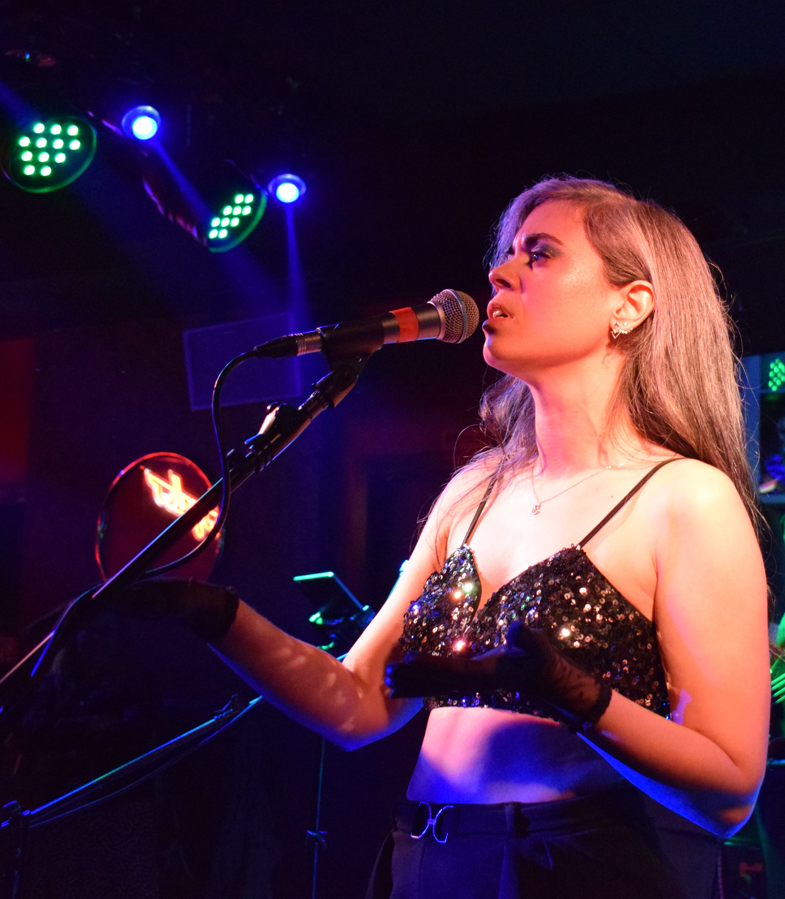
Silvia
Voz
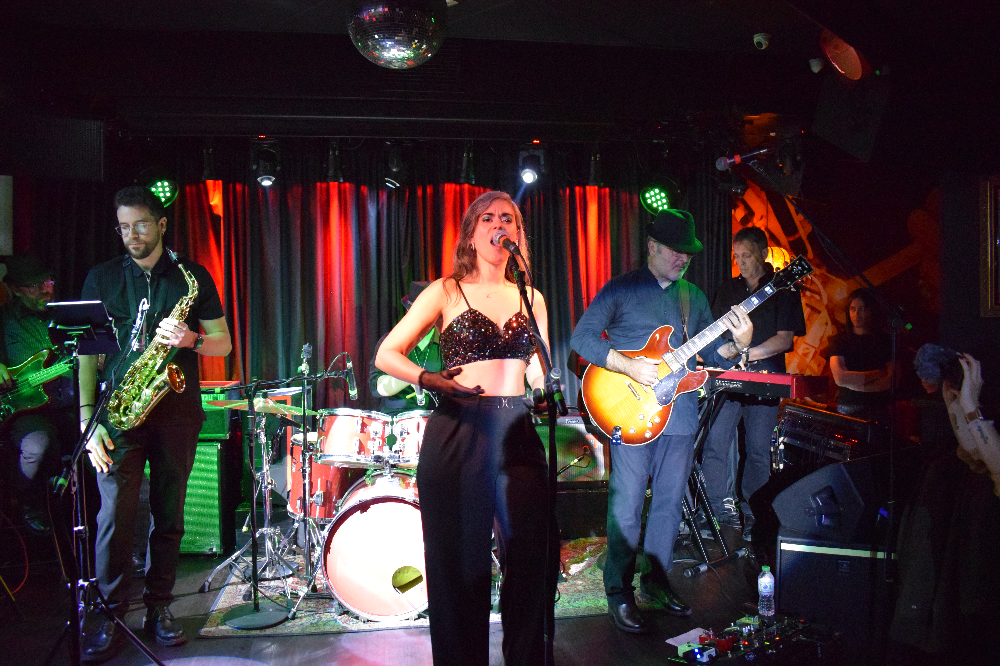
Cáceres · Extremadura
Jazz · Bossa · Soul · Funk
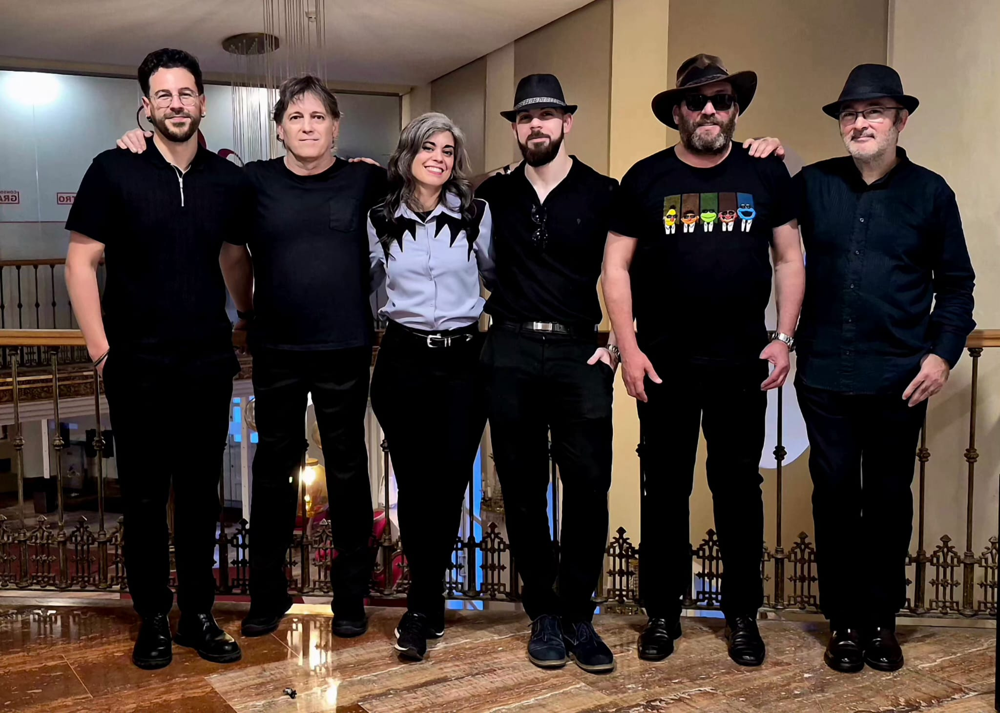
Somos 7 músicos de Cáceres apasionados por la elegancia del jazz y el ritmo del funk. Desde nuestra formación, hemos buscado llevar una experiencia sonora única a cada rincón de Extremadura, actuando en escenarios emblemáticos como el Gran Teatro de Cáceres y la mítica sala Boogaloo.
Nuestro espectáculo no es solo música, es una atmósfera. Adaptamos nuestro repertorio para crear el ambiente perfecto, ya sea una velada íntima de jazz y bossa o una fiesta llena de soul y funk.
Standards clásicos y bebop con el sello inconfundible de nuestra sección de vientos.
La calidez de Brasil transportada a Extremadura. Ritmo suave y melodías envolventes.
La fuerza y emoción de la voz arropada por un groove imparable.
Energía pura para no dejar de bailar. Slap de bajo y rítmica frenética.

Voz

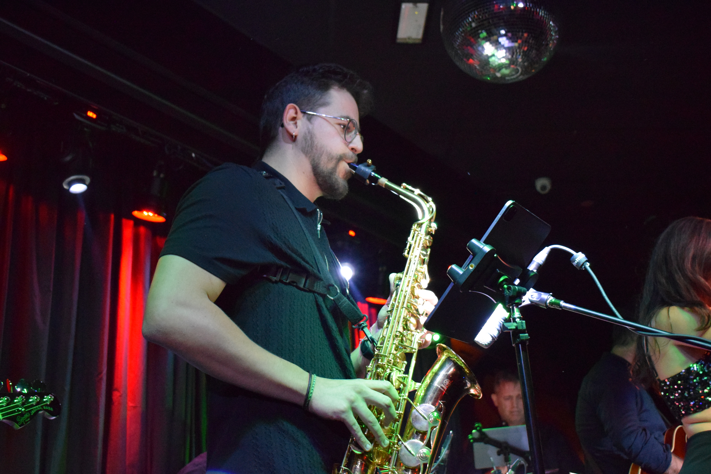
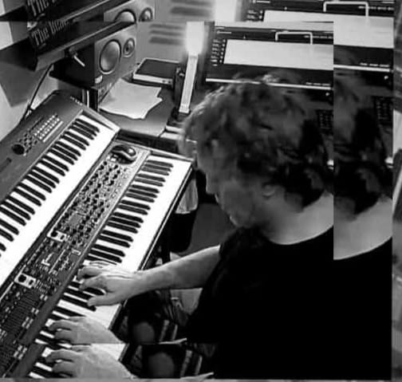
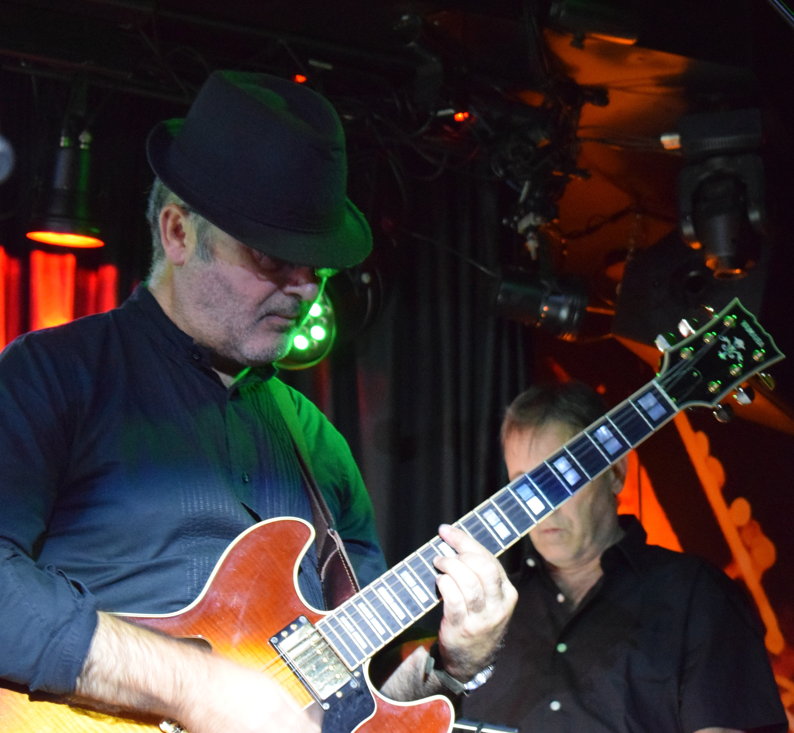
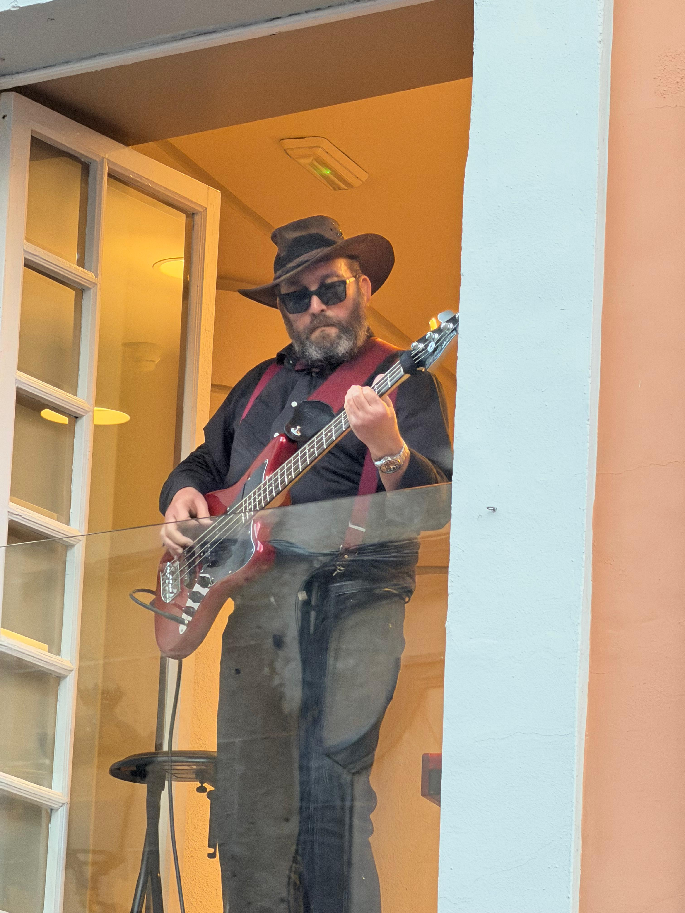
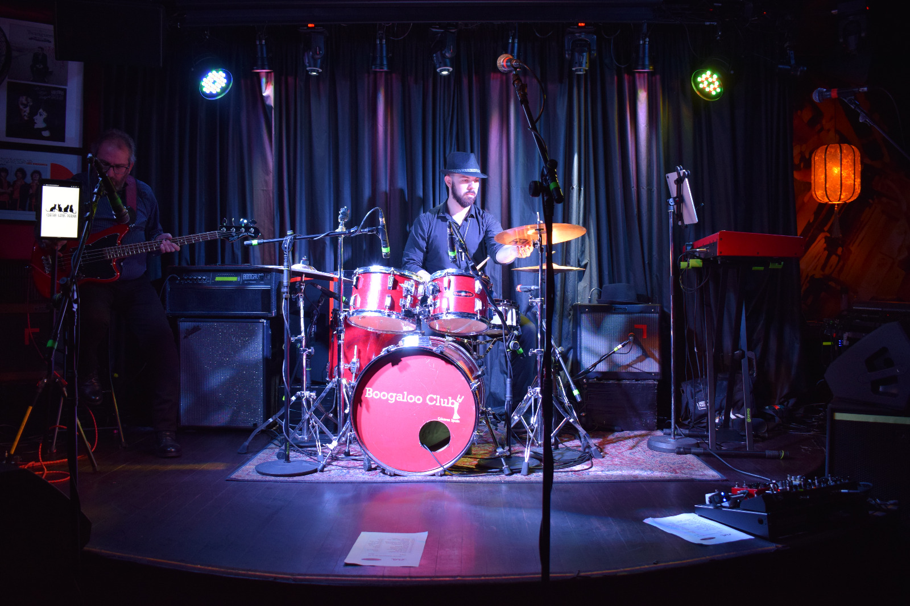
Recuerdos de nuestras mejores actuaciones en directo, desde el Gran Teatro de Cáceres hasta la emblemática sala Boogaloo.
Gran Teatro de Cáceres I
Gran Teatro de Cáceres II
Directo en Boogaloo I
Directo en Boogaloo II
Nuestra historia en cada nota y cada escenario.
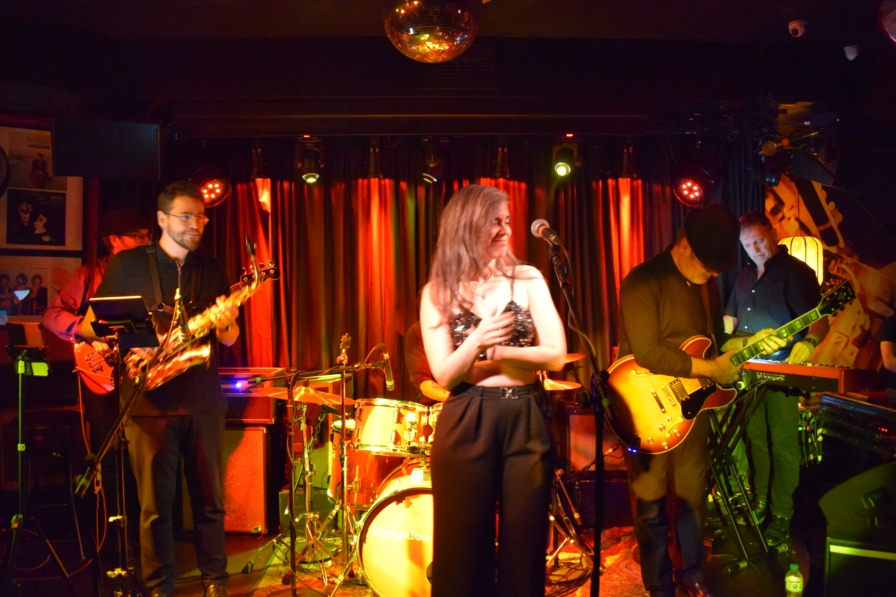
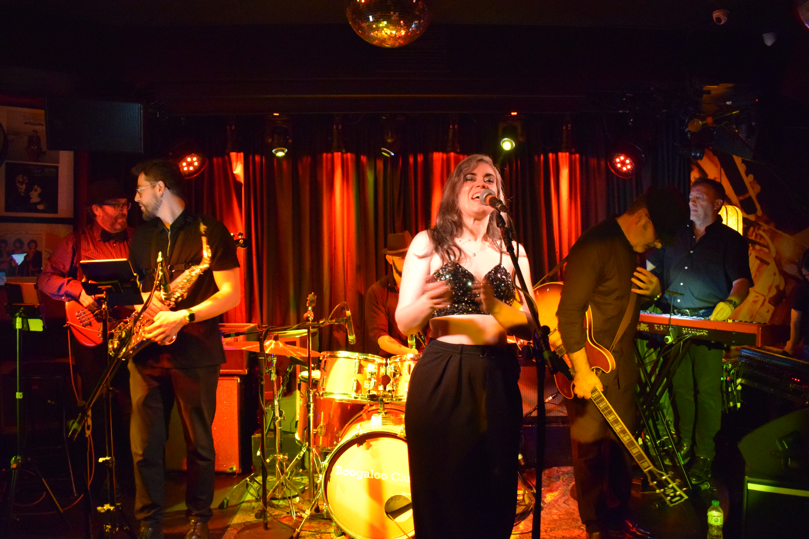
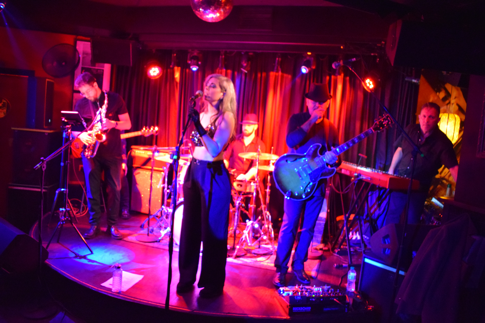
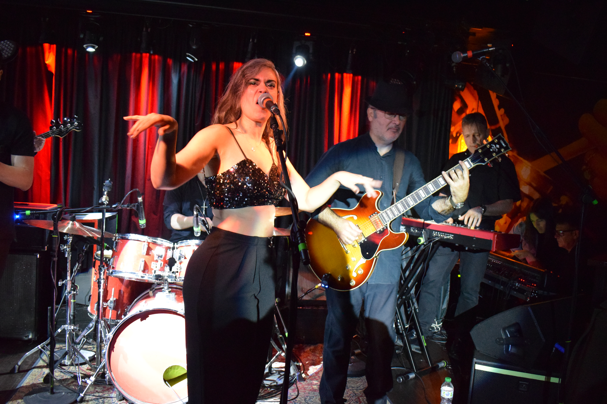
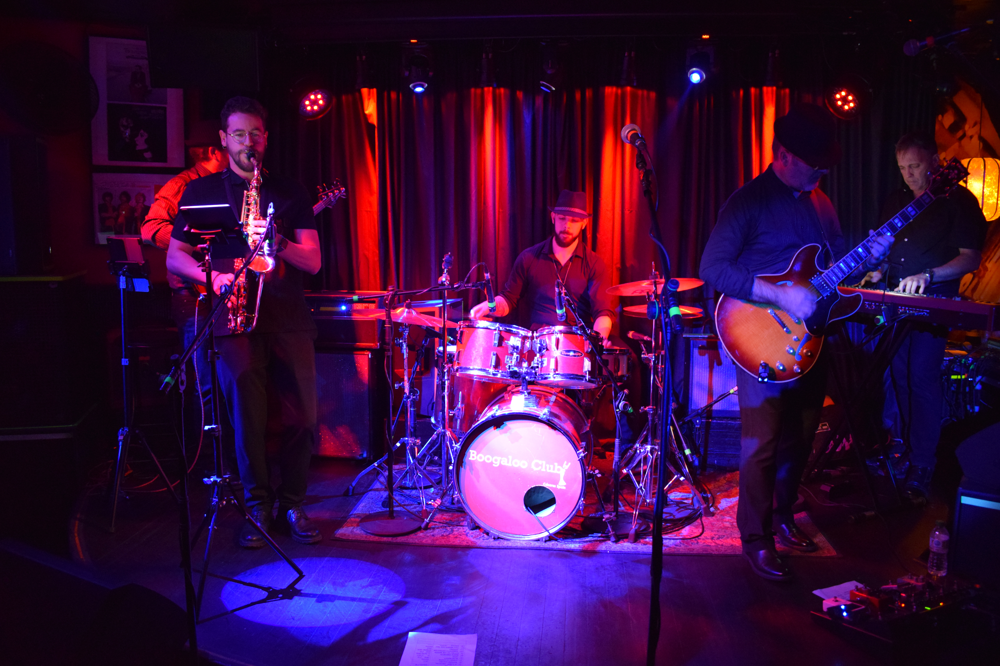
Escríbenos para consultar disponibilidad y presupuestos. Somos un grupo 100% extremeño comprometido con la calidad musical.